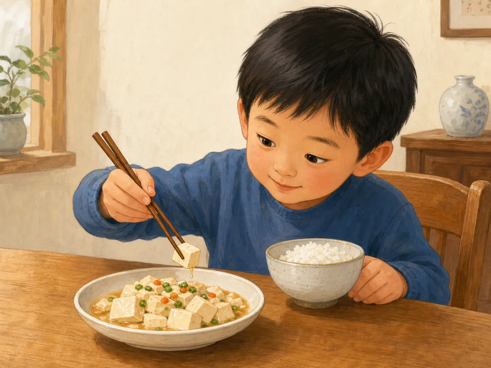

豆腐、花生和两根筷子
Tofu, Peanuts, and Two Chopsticks
阅读难度 · 中等Reading level · Medium
Page 1
先夹豆腐，还是先夹花生？
Tofu First, or a Peanut?

This is a modern illustration. Soft tofu slips and breaks easily, so it is a good test of gentle control.
桌上有一块嫩豆腐和一颗花生。你会先夹哪一个？
豆腐看起来大，却又滑又软。夹得太松，它会溜走；夹得太紧，它可能碎掉。花生很硬，却会像小轮子一样滚。原来，用筷子不只是“夹住”这么简单：对付不同的食物，手指要换一种力气。
第一次没有成功，并不表示你“不会吃饭”。有人用右手，有人用左手；有人握得靠前，有人握得靠后。只要吃得舒服、安全，也不妨碍别人，就可以慢慢找到适合自己的方法。
On the table sit a cube of soft tofu and a peanut. Which one would you try first?
The tofu looks large, but it is slippery and delicate. Hold it too loosely and it slides away; squeeze too hard and it may break. The peanut is firm, yet it rolls like a tiny wheel. Using chopsticks is not simply a matter of “grabbing.” Your fingers adjust their pressure for different foods.
Missing on the first try does not mean you are eating “the wrong way.” Some people use their right hand and others their left. Some hold chopsticks closer to the tips, while others hold them farther back. You can take time to find a method that is comfortable, safe, and considerate of the people around you.
Page 2
两根细棍，怎样听手指的话？
How Do Two Sticks Follow Your Fingers?

This modern diagram shows one common grip: the lower chopstick stays steadier while the upper one opens and closes.
一种常见的握法，是让下面那根筷子靠在虎口和无名指上，尽量保持稳定；上面那根由拇指、食指和中指带动。上面的筷子一开一合，两根尖端就能碰在一起。
筷子握得靠后，前端移动的距离会更大，夹远一点的食物也比较方便；可是筷子越长，控制尖端往往越需要练习。木头或竹子的表面通常比光滑的金属更容易产生摩擦，方一点的筷身也不容易在桌上滚远。形状和材料，都在悄悄帮助你的手。
不过，这只是常见方法，不是唯一的“标准答案”。真正的小测试，是能不能轻轻托住豆腐，再准确碰到那颗花生。
In one common grip, the lower chopstick rests against the base of the thumb and the ring finger, where it stays fairly still. The thumb, index finger, and middle finger guide the upper chopstick. As the upper stick opens and closes, the two tips meet.
Holding the sticks farther from the tips gives them a wider reach, but longer sticks can take more practice to control. Wood and bamboo usually create more friction than smooth metal, and squared sides keep chopsticks from rolling as easily. Shape and material quietly help the hand do its job.
This is a common method, not the only “correct answer.” The real test is whether you can support the tofu gently and then touch that rolling peanut precisely.
Page 3
最早的筷子在哪里？
Where Are the Earliest Chopsticks?
考古学家遇到一个难题：两根细长的骨棒或木棒，可能是筷子，也可能是别的工具。江苏龙虬庄遗址出土过距今七千多年、被一些研究者解释为筷子的骨棒；可是只看形状，很难确定它们当年到底怎样使用。商代遗址中也发现过被认作“箸”的骨制和青铜器物，这些材料为早期筷子的历史提供了更明确的线索。
古书还讲过一个有名的故事。《韩非子》说，商纣王使用象牙箸，大臣箕子担心：有了昂贵的筷子，接下来就会想配上越来越奢华的器物和食物。这个故事写成于商代以后许多世纪，重点是警告统治者不要一步步走向奢侈，不能把它当成纣王“发明筷子”的现场记录。
早期文字常把筷子叫作“箸”。明代笔记里记录过江南船民为了避开“住”这个不吉利的同音字，把“箸”叫作“快儿”。这能说明“快”类名称曾在一些地区流行，却不能证明全国在某一天一起把“箸”改成了“筷子”。语言的变化通常比一个小故事更慢、更复杂。
Archaeologists face a puzzle: two long, thin pieces of bone or wood might be chopsticks, but they might also be different tools. Bone sticks more than seven thousand years old from the Longqiuzhuang site in Jiangsu have been interpreted by some researchers as chopsticks. Shape alone, however, cannot tell us exactly how they were used. Bone and bronze objects identified as zhu, an old word for chopsticks, have also been found at Shang-period sites. These finds provide clearer clues about early chopsticks.
An ancient book tells another famous story. The Han Feizi says that King Zhou of Shang used ivory chopsticks. His adviser Jizi worried that costly chopsticks would soon lead to richer dishes and one luxury after another. The text was written many centuries after the Shang period, and its point is to warn rulers about growing extravagance. It is not an eyewitness report that King Zhou invented chopsticks.
Early texts often call chopsticks zhu. A Ming-dynasty writer recorded that some boat people near the lower Yangtze used a name like “quick ones” because the word zhu sounded like “stop,” an unlucky word on a boat. This is evidence that a “quick” name circulated in some places - not proof that the whole country renamed chopsticks on a single day. Language usually changes more slowly and messily than a neat story suggests.
Page 4
是菜改变了筷子，还是筷子改变了菜？
Did Food Shape Chopsticks - or Vice Versa?
古代饭桌上并不是只有筷子。礼仪文献提到，吃不同食物时会使用手、匙和箸；刀也没有消失，它在厨房里负责切割。到了汉代，许多羹菜里的肉和蔬菜已经切成小块，用筷子从汤汁中夹取很方便，米饭和粥则更适合用匙。
人们常说，为了省燃料，厨师把食物切小、缩短烹调时间，于是筷子才流行起来。这个解释听起来合理，却很难单独证明。更谨慎的说法是：烹调方法、食物大小、共同用餐的习惯和餐具长期互相影响。菜切得小，让筷子更好用；筷子常用以后，厨师也更愿意准备容易夹取的菜。
所以，“中国人不用餐刀，是因为孔子反对刀”并不是可靠的完整答案。没有可信证据说明孔子发明或推广了筷子。真实的变化跨越了很长时间，而且匙、刀、手和筷子一直可以各有用处。
Chopsticks were not the only utensils at ancient tables. Ritual texts describe hands, spoons, and zhu being used for different foods, while knives continued to do cutting work in the kitchen. By the Han period, meat and vegetables in many stews were already prepared in small pieces. Chopsticks worked well for lifting solids from broth, while spoons remained useful for rice, porridge, and liquids.
A popular explanation says that cooks cut food small to save fuel and shorten cooking time, and chopsticks became common as a result. That idea sounds possible, but it is difficult to prove as the one cause. A more careful answer is that cooking methods, bite-size pieces, shared meals, and utensils influenced one another over a long time. Smaller pieces made chopsticks practical, and familiar chopsticks may also have encouraged cooks to prepare food that was easy to pick up.
That is why “Chinese diners avoided table knives because Confucius opposed them” is not a reliable full explanation. Trustworthy evidence does not show Confucius inventing or promoting chopsticks. The real change stretched across centuries, and spoons, knives, hands, and chopsticks continued to serve different purposes.
Page 5
东亚的筷子都一样吗？
Are Chopsticks the Same Across East Asia?
筷子从中国传播到东亚许多地方，但没有变成一种完全相同的餐具。越南、中国、日本和朝鲜半岛形成了彼此相关的筷子文化，各地又按照自己的食物、材料和餐桌习惯改变了它。
例如，韩国餐桌常把金属筷子和匙放在一起；日本常见的筷子往往较短，尖端也较细；中国不同地区和家庭使用的长短、粗细与材料同样有变化。就连同一个家庭，也可能有日常竹筷、耐用的合金筷和夹公菜用的公筷。
因此，“会用中国筷子”不等于到了任何地方都知道当地礼节。最聪明的办法不是背下一张永远不变的规则表，而是先观察主人怎样做；不确定时，礼貌地问一句。
Chopsticks spread from China to many parts of East Asia, but they did not become one identical utensil. Vietnam, China, Japan, and the Korean Peninsula developed related chopstick cultures, and each adapted the tool to local foods, materials, and table habits.
For example, Korean place settings often pair metal chopsticks with a spoon. Common Japanese chopsticks tend to be shorter and more tapered. Within China, length, thickness, and material also vary by region and household. A single home may keep everyday bamboo chopsticks, durable alloy ones, and a separate pair for serving shared food.
Knowing how to use Chinese chopsticks therefore does not mean knowing the etiquette everywhere. The wisest approach is not to memorize a list of rules that never changes. Watch what your hosts do, and ask politely when you are unsure.
Page 6
礼貌也会变化
Manners Can Change Too

This is a modern illustration, not evidence of ancient etiquette. A chopstick rest is one way to set chopsticks down; homes and restaurants may do things differently.
在许多中国家庭里，把筷子直直插在饭里会让人想到祭祀时的香，所以通常要避免。用筷子指人、在公盘里翻来翻去，也容易让同桌的人不舒服。不过，饭桌礼仪并不是一部从古到今、全国完全相同的法律。家庭、地区、餐馆和时代都会带来差别。
中国菜常常放在桌子中央一起分享。过去，有些家庭会直接用自己的筷子夹菜；近年公共卫生宣传更常鼓励使用公筷、公勺，或把菜分到个人盘里。2020年发布的相关指南甚至提出“一菜一公筷，一汤一公勺”。这说明礼貌也会随着人们对卫生和共同用餐的理解而改变。
现在回到桌上的挑战：夹豆腐时，动作轻一点；夹花生时，让两根筷尖对得更准一点。如果它又滚走了，笑一笑再来。练习会让这项动作更熟练，但筷子不是智力测验，也没有证据证明会用筷子就会让人更聪明。
In many Chinese homes, chopsticks standing upright in rice recall incense used in rituals, so people usually avoid it. Pointing at someone with chopsticks or digging through a shared dish can also make others uncomfortable. Yet table manners are not one law that has stayed identical across all of China for all time. Families, regions, restaurants, and generations may do things differently.
Chinese dishes are often placed in the center of the table for everyone to share. In some families, diners once commonly reached in with their personal chopsticks. More recent public-health campaigns have encouraged serving chopsticks, serving spoons, or individually portioned food. A 2020 national guideline even recommended “one serving pair for each dish and one serving spoon for each soup.” Manners can change as people rethink hygiene and shared meals.
Now return to the challenge on the table. Use a gentler touch for the tofu, and line up the tips more precisely for the peanut. If it rolls away again, laugh and try once more. Practice improves this particular skill, but chopsticks are not an intelligence test, and there is no good evidence that using them makes a person smarter.
两根筷子里，没有一个简单答案
Two Chopsticks, No Simple Answer
两根筷子看起来简单，背后却藏着许多问题：什么样的古物才算筷子？菜和餐具是谁改变了谁？同一种工具到了不同地方，为什么会有不同形状和礼节？
下一次你夹起一块豆腐，可以想一想：你手里的不只是两根棍子，而是一件被无数厨师、食客和家庭慢慢改变的日常工具。它的历史不是一条笔直的线；正因为如此，才值得继续追问。
Two chopsticks look simple, yet they hold many questions. When does an ancient object count as a chopstick? Did food reshape the utensil, or did the utensil reshape food? Why did one tool develop different forms and manners in different places?
The next time you lift a piece of tofu, remember that you are holding more than two sticks. You are using an everyday tool slowly reshaped by countless cooks, diners, and families. Its history is not a straight line - and that is exactly what makes it worth exploring.